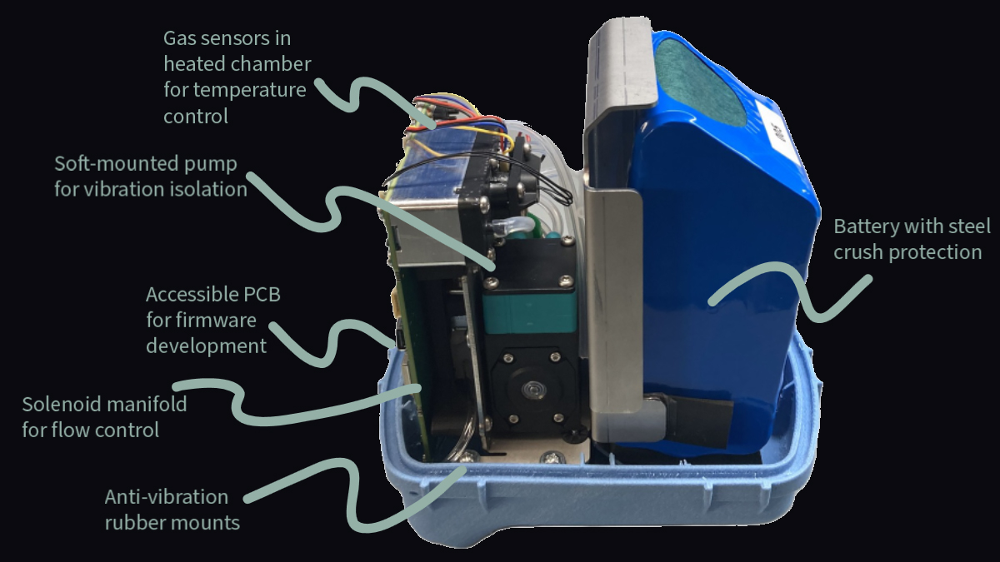

ZELP Sense is a low-cost, wearable device that continuously measures methane and carbon dioxide emissions from individual cows, in real-world settings. The device provides a more accurate, animal-friendly, and scalable alternative to existing measurement methods. Emission measurement is critical for the development of methane-reducing technologies such as feed additives, helping to reduce near-term global warming.

Design exposes electronics and flowpath allowing easy access for development and maintenance. Integrated mounting features for pump, solenoids, and sensors reduce part count and assembly time.
Failure load testing of breakaway mechanism. Engineered to reliably release at 120kg load, while resisting fatigue failure from normal cow movement.
Successful on-animal trial of pre-production prototype. Device worn by cow in real-world conditions for two weeks while collecting methane and carbon dioxide data.
When I started at ZELP, the team was finalising the design of a demonstration prototype for use in academic and commercial trials. I immediately took ownership of some aspects of the design, the dFMEA for the prototype, and eventually transferred manufacture to a separate build team. We soon moved on to working on the next design iteration, the first commercial version of the product. I led the design of the gas sensing unit. This included management of pressure and filtration in the sampling flowpath, and integration with hardware through a pump, solenoids, and gas sensors. I also designed a breakaway mechanism to safely detach the device and flowpath under a pre-defined load. I designed parts for injection moulding, sheet metal bending, and volume CNC machining, all while optimising the design for assembly. Coming from medical devices, I had to adjust my approach to risk. Operating on a startup budget with tight timelines does not allow for the same level of risk mitigation as in a regulated medical device, so I focused on identifying the highest-impact risks and mitigating those as much as possible within our constraints. I completed and reviewed GD&T drawings and tolerance analyses to reduce risk of failures due to off-tool part variation. I also developed a custom web app using the Onshape API to automate BoM management and cost tracking. Ultimately I significantly reduced part count, BoM cost, and assembly time while maintaining a robust design with zero field failures in pre-production trials.
BoM cost reduction of 60% through rigorous DfM. Assembly time reduced from ~4 hours to ~0.5 hours through simplified design and DfA. Component count reduced from ~500 to ~60 via integrated part design and elimination of redundancy. Tolerance analysis across all manufactured components using GD&T stack-ups. Zero field failures in pre-production trials.
I'm happy to discuss this project or explore new opportunities.